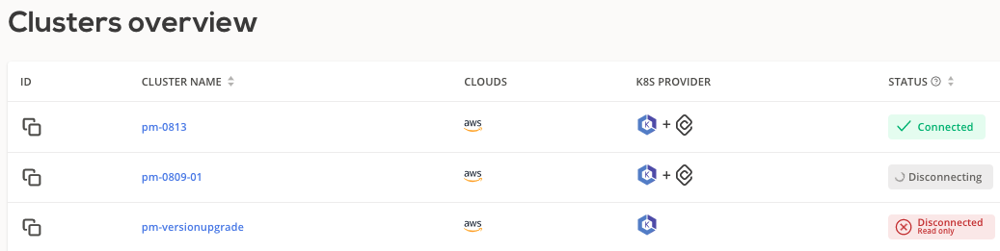
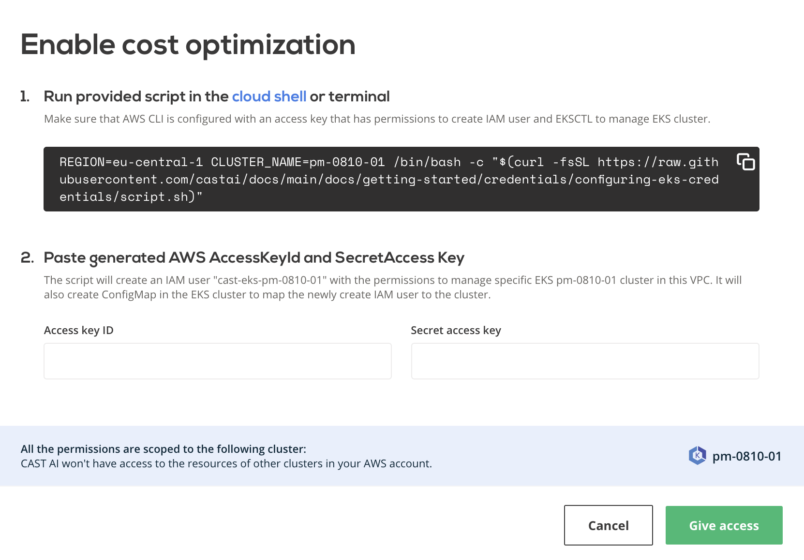
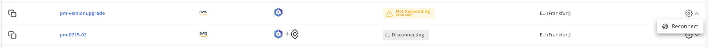
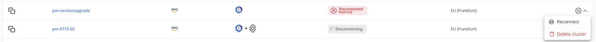

External cluster troubleshooting¶
This guide is intended for users who are experiencing issues while connecting their EKS, GCP, or AKS clusters to CAST AI. Once the cluster is connected, you can check the Status field in the Clusters overview screen to understand if cluster is operating as expected.

Further sections will cover the most common issues and how to resolve them.
Your cluster does not appear in the Connect Cluster screen¶
If a cluster does not appear in the Connect your cluster screen after you've run the connection script, perform following steps.
-
Check agent container logs:
kubectl logs -n castai-agent -l app.kubernetes.io/name=castai-agent -c agent -
You might get output similar to this:
time="2021-05-06T14:24:03Z" level=fatal msg="agent failed: registering cluster: getting cluster name: describing instance_id=i-026b5fadab5b69d67: UnauthorizedOperation: You are not authorized to perform this operation.\n\tstatus code: 403, request id: 2165c357-b4a6-4f30-9266-a51f4aaa7ce7"or
time="2021-05-06T14:24:03Z" level=fatal msg=agent failed: getting provider: configuring aws client: NoCredentialProviders: no valid providers in chain"
These errors indicate that the CAST AI Agent failed to connect to the AWS API either because the nodes and/or workloads running in your cluster have custom constrained IAM permissions or the IAM roles are removed entirely. However, the CAST AI Agent requires read-only access to the AWS EC2 API to correctly identify some properties of your EKS cluster. Access to the AWS EC2 Metadata endpoint is optional, but the variables discovered from the endpoint must then be provided. The CAST AI Agent uses the official AWS SDK, so all variables to customize your authentication mentioned in its documentation are supported.
Provide cluster metadata by adding these environment variables to the CAST AI Agent deployment:
- name: EKS_ACCOUNT_ID
value: "000000000000" # your aws account id
- name: EKS_REGION
value: "eu-central-1" # your eks cluster region
- name: EKS_CLUSTER_NAME
value: "staging-example" # your eks cluster name
Spot nodes are displayed as On-demand in your cluster's Available Savings page¶
The CAST AI agent requires read-only permissions, so the default AmazonEC2ReadOnlyAccess is enough. Provide AWS API access by adding these variables to the CAST AI Agent secret:
AWS_ACCESS_KEY_ID = xxxxxxxxxxxxxxxxxxxx
AWS_SECRET_ACCESS_KEY = xxxxxxxxxxxxxxxxxxxxxxxxxxxxxxxxxxxxxxxx
Here is an example of a CAST AI Agent deployment and secret with all the mentioned environment variables added:
# Source: castai-agent/templates/deployment.yaml
apiVersion: apps/v1
kind: Deployment
metadata:
name: castai-agent
namespace: castai-agent
labels:
app.kubernetes.io/name: castai-agent
app.kubernetes.io/instance: castai-agent
app.kubernetes.io/version: "v0.23.0"
app.kubernetes.io/managed-by: castai
spec:
replicas: 1
selector:
matchLabels:
app.kubernetes.io/name: castai-agent
app.kubernetes.io/instance: castai-agent
template:
metadata:
labels:
app.kubernetes.io/name: castai-agent
app.kubernetes.io/instance: castai-agent
spec:
priorityClassName: system-cluster-critical
serviceAccountName: castai-agent
affinity:
nodeAffinity:
requiredDuringSchedulingIgnoredDuringExecution:
nodeSelectorTerms:
- matchExpressions:
- key: "kubernetes.io/os"
operator: In
values: [ "linux" ]
- matchExpressions:
- key: "beta.kubernetes.io/os"
operator: In
values: [ "linux" ]
containers:
- name: agent
image: "us-docker.pkg.dev/castai-hub/library/agent:v0.24.0"
imagePullPolicy: IfNotPresent
env:
- name: API_URL
value: "api.cast.ai"
- name: PPROF_PORT
value: "6060"
- name: PROVIDER
value: "eks"
# Provide values discovered via AWS EC2 Metadata endpoint:
- name: EKS_ACCOUNT_ID
value: "000000000000"
- name: EKS_REGION
value: "eu-central-1"
- name: EKS_CLUSTER_NAME
value: "castai-example"
envFrom:
- secretRef:
name: castai-agent
resources:
requests:
cpu: 100m
limits:
cpu: 1000m
- name: autoscaler
image: k8s.gcr.io/cpvpa-amd64:v0.8.3
command:
- /cpvpa
- --target=deployment/castai-agent
- --namespace=castai-agent
- --poll-period-seconds=300
- --config-file=/etc/config/castai-agent-autoscaler
volumeMounts:
- mountPath: /etc/config
name: autoscaler-config
volumes:
- name: autoscaler-config
configMap:
name: castai-agent-autoscaler
# Source: castai-agent/templates/secret.yaml
apiVersion: v1
kind: Secret
metadata:
name: castai-agent
namespace: castai-agent
labels:
app.kubernetes.io/instance: castai-agent
app.kubernetes.io/managed-by: castai
app.kubernetes.io/name: castai-agent
app.kubernetes.io/version: "v0.23.0"
data:
# Keep API_KEY unchanged.
API_KEY: "xxxxxxxxxxxxxxxxxxxx"
# Provide an AWS Access Key to enable read-only AWS EC2 API access:
AWS_ACCESS_KEY_ID: "xxxxxxxxxxxxxxxxxxxx"
AWS_SECRET_ACCESS_KEY: "xxxxxxxxxxxxxxxxxxxxxxxxxxxxxxxxxxxxxxxx"
Alternatively, if you are using IAM roles for service accounts instead of providing AWS credentials you can annotate castai-agent service account with your IAM role.
kubectl annotate serviceaccount -n castai-agent castai-agent eks.amazonaws.com/role-arn="arn:aws:iam::111122223333:role/iam-role-name"
TLS handshake timeout issue¶
In some edge cases due to specific cluster network setup agent might fail with the following message in the agent container logs:
time="2021-11-13T05:19:54Z" level=fatal msg="agent failed: registering cluster: getting namespace \"kube-system\": Get \"https://100.10.1.0:443/api/v1/namespaces/kube-system\": net/http: TLS handshake timeout" provider=eks version=v0.22.1
To resolve this issue delete castai-agent pod. The deployment will recreate the pod and issue will be resolved.
Refused connection to control plane¶
When enabling cluster optimization for the first time, the user runs the pre-generated script to grant required permissions to CAST AI as shown below.

Error message No access to Kubernetes API server, please check your firewall settings indicates that a firewall prevents communication between the control plane and CAST AI.
To solve this issue, allow access to CAST AI IP 35.221.40.21 and then enable optimization again.
Disconnected or Not responding cluster¶
If cluster has a Not responding status, most likely the CAST AI agent deployment is missing. Press Reconnect and follow the instructions provided.

The Not responding state is temporary and if not fixed, the cluster will enter into the Disconnected state. A disconnected cluster can be reconnected or deleted from the console as shown.

The delete action only removes the cluster from the CAST AI console, leaving it running in the cloud service provider.
Upgrading the agent¶
To check which agent version is running on your cluster, run the following command:
kubectl describe pod castai-agent -n castai-agent | grep castai-hub/library/agent:v
You can cross-check our Github repository for the number of the latest version available.
In order to upgrade the CAST AI agent version, please perform the following steps:
- Go to Connect cluster
- Select the correct cloud service provider
- Run the provided script
In case of an error when upgrading the agent:
- i.e.
MatchExpressions:[]v1.LabelSelectorRequirement(nil)}: field is immutable- run the following command:
kubectl delete deployment -n castai-agent castai-agentand repeat the step 3.
- run the following command:
The latest version of CAST AI agent is now deployed in your cluster.
Deleted agent¶
In case CAST AI agent deployment got deleted from the cluster, you can re-install the agent by re-running the script from Connect cluster screen. Please ensure you have chosen the correct cloud service provider.
Tip
If you are still encountering any issues, ping us with logs output at: https://castai-community.slack.com/
Cluster-controller is receiving forbidden access¶
In some scenarios, during multiple onboardings, failing updates or other issues, cluster token that is used by cluster-controller, can get invalidated, and become forbidden from accessing CAST AI API, thus failing to operate the cluster. To renew it, the following Helm commands should be ran.
helm repo update
helm upgrade -i cluster-controller castai-helm/castai-cluster-controller -n castai-agent \
--set castai.apiKey=$CASTAI_API_TOKEN \
--set castai.clusterID=46d0d683-da70-4f69-b970-8d6509001c10
AKS Fail to pull images from Azure Container Registry to Azure Kubernetes Service cluster¶
In case the cluster is already attached to an ACR, after onboarding on CAST AI, the Service Principal created to manage the cluster might not have the correct permissions to pull images from the private ACRs, resulting in failed to pull and unpack image, failed to fetch oauth token: unexpected status: 401 Unauthorized when new nodes are created.
Microsoft has a detailed documentation on how to troubleshoot and fix the issue Fail to pull images from Azure Container Registry to Azure Kubernetes Service cluster .
In most cases, Solution 1: Ensure AcrPull role assignment is created for identity is enough to resolve it.